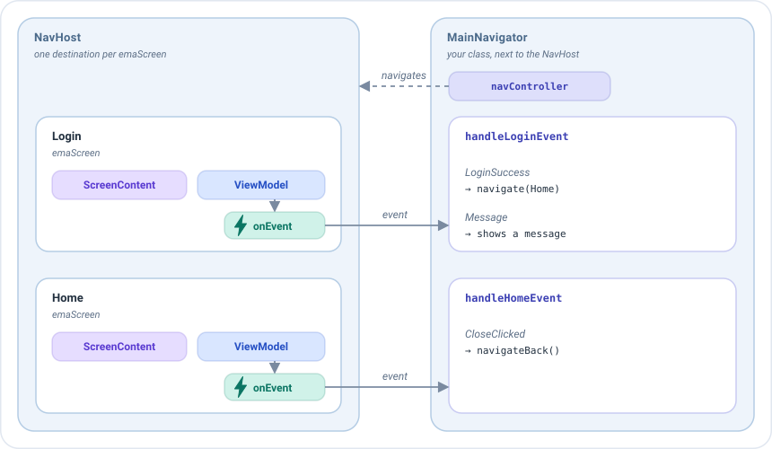
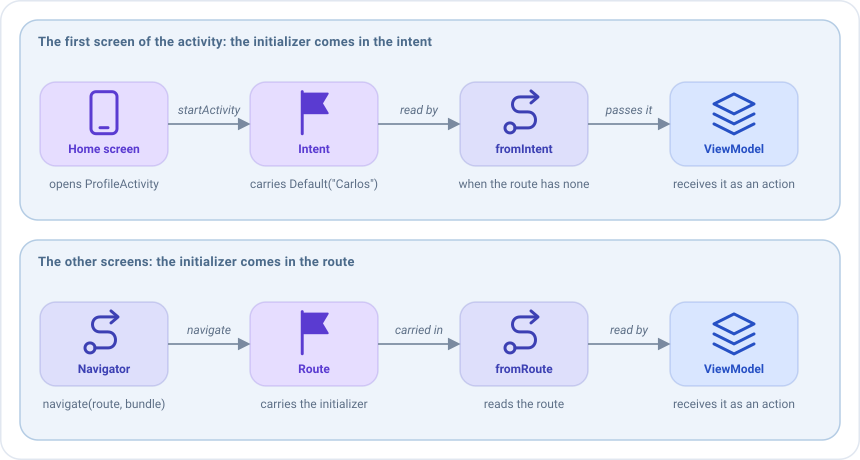

Compose navigation¶
This page is about Navigation Compose, and it needs the
emanate-compose-android-nav2artifact. The rest of the Compose artifacts don't depend on any navigation library, so a different navigation can be used withEmaScreen.
In Emanate a ViewModel never navigates. Navigating is the job of the navigation graph that contains the screen,
usually the NavHost: it is the one that knows which screens exist and holds the NavController to move between them.
The ViewModel only publishes an event that says what happened, like "the login succeeded". Someone outside the screens has to receive those events and decide where to go: the navigator, a class
that lives next to the NavHost and holds its NavController. It is not a class of Emanate: it is a plain class of
yours, and it is a good pattern to handle all the navigation of your app this way.
This is the main flow of the sample, with two of its screens, the login and the home:

- Each destination of the
NavHostis anemaScreen, with its screen content, its ViewModel and itsonEvent. - When the credentials are right, the ViewModel of
LoginpublishesLoginSuccess(user). It doesn't know which screen comes next. - The
onEventof that screen hands the event to the navigator, to its function for that screen:handleLoginEvent. - The navigator decides for each event:
LoginSuccessopensHome, and theCloseClickedofHomegoes back to the login. It does it with thenavController, which changes the destination shown by theNavHost.
Keeping the navigation out of the ViewModel has two advantages. The ViewModel can be tested without Android, and the same event can lead to different places in different apps or graphs: on a phone it may open a new screen and on a tablet update a side panel.
The decision of where to go could be written directly in each onEvent lambda, but we recommend that every navigation
goes through a navigator: the graph only declares the screens, and all the navigation of a flow lives in one place that
is easy to read and to change. See The navigator.
Routes¶
Every screen registered with emaScreen or emaDialog has a route. By default it is ScreenContent::class.routeId,
unique per class:
navController.navigate(HomeScreenContent::class.routeId)
The navigator¶
Create one navigator per navigation graph, not one per screen, and let it handle the navigation of all the screens
of the graph. It is a plain class that receives the NavController and has one function per screen: each function
receives the events of that screen and decides where to go. Emanate doesn't require a base class or an interface for it:
any class with this shape works. Create it once, with remember, next to the NavHost:
class MainNavigator(private val navController: NavController, private val context: Context) {
fun handleLoginEvent(event: LoginEvent, onMessage: (LoginEvent) -> Unit) {
when (event) {
is LoginEvent.LoginSuccess -> navController.navigate(
route = HomeScreenContent::class.routeId,
initializerBundle = EmaInitializerBundle(
HomeInitializer.HomeUser(event.user),
BundleSerializerStrategy.kSerialization(HomeInitializer.serializer())
)
)
// A message is not navigation: whoever shows messages handles it
is LoginEvent.Message -> onMessage(event)
}
}
fun handleHomeEvent(event: HomeEvent, onMessage: (HomeEvent) -> Unit) {
when (event) {
// The profile creation is in its own activity
HomeEvent.CreateClicked -> context.startActivity(Intent(context, ProfileActivity::class.java))
// The login is the screen below the home
HomeEvent.CloseClicked -> navController.navigateBack()
is HomeEvent.UserCreated -> onMessage(event)
}
}
}
setContent {
val navController = rememberNavController()
val navigator = remember { MainNavigator(navController, context) }
NavHost(navController, startDestination = LoginScreenContent::class.routeId) {
emaScreen(
screenContent = LoginScreenContent(),
viewModel = { get<LoginViewModel>() },
onEvent = { navigator.handleLoginEvent(it) { /* show the message */ } }
)
}
}
NavController.navigateBack(closeActivityWhenBackstackIsEmpty = true) pops the back stack and closes the activity when
there is nothing left, and NavController.navigateToExternalLink(url) opens a link in another app.
Passing an initializer¶
Send the initializer with the navigate extension that receives an EmaInitializerBundle:
navController.navigate(
route = HomeScreenContent::class.routeId,
initializerBundle = EmaInitializerBundle(
HomeInitializer.HomeUser(user),
BundleSerializerStrategy.kSerialization(HomeInitializer.serializer())
)
)
Another overload receives a NavOptionsBuilder lambda, like navigate(route) { launchSingleTop = true }.
The destination declares where to read it from with initializerSupport. The initializer travels in the route as
text, so Compose navigation reads it with kotlinx.serialization: the parcelable and serializable strategies, which
only work with Bundles, can't be used in a route.
emaScreen(
screenContent = HomeScreenContent(),
viewModel = { get<HomeViewModel>() },
initializerSupport = EmaInitializerSupport.fromRoute(HomeInitializer.serializer()),
onEvent = { navigator.handleHomeEvent(it) { /* show the message */ } }
)
The initializer reaches the ViewModel as an action, the first time the screen is created. See Initializers.
Where the initializer comes from¶
EmaInitializerSupport has one function per origin. The name says where the initializer is read from:
| Function | Where it reads the initializer | When to use it |
|---|---|---|
fromRoute(serializer) |
The route of the destination. | Most screens: the ones you reach with navigate(route, initializerBundle). |
fromIntent(serializer) |
The route and, if it has none, the intent of the activity. | The first screen of an activity that is opened with an initializer. |
fromBundle(serializer, bundle) |
The route and, if it has none, the Bundle that you give it. |
A graph that receives its arguments in a Bundle. |
fromInitializer(serializer, initializer) |
The route and, if it has none, the initializer that you give it. | An initializer that you already have, like the one of a deep link, or a test. |
In all of them the route wins: if it carries an initializer, the screen uses it. The origin of the function is only the backup for when the route has none.
The first screen of an activity¶
The initializer of a screen normally travels in its route: the navigator puts it there with
navigate(route, initializerBundle), and fromRoute reads it back. But the first screen of a NavHost, its
startDestination, is not reached with navigate: it is shown as soon as the NavHost is created, so its route has no
initializer.
If that screen needs one, it can come from the intent of the activity. The sample doesn't need it, because the
profile creation has no data to receive, but imagine that the home screen starts ProfileActivity and puts a
ProfileCreationInitializer.Default("Carlos") in the intent, so that the creation screen can say who creates the
user. It takes two steps, one in each activity:

1. Put the initializer in the intent of the activity that opens the graph. Use setInitializer of the Intent,
with the serializer of the initializer, and start the activity:
val intent = Intent(context, ProfileActivity::class.java).setInitializer(
ProfileCreationInitializer.Default("Carlos"),
BundleSerializerStrategy.kSerialization(ProfileCreationInitializer.serializer())
)
context.startActivity(intent)
The initializer travels in the extras of the intent, under the key that Emanate reads. If you open the activity with a
navigation graph of Android, as the sample does with an action that goes to an activity, navController.navigate(id,
EmaInitializerBundle(...)) puts it there for you, and you only have to use the same serializer when you read it.
2. Declare the first screen with fromIntent. It reads the initializer from the intent of the activity that
contains the NavHost, using the same serializer:
NavHost(navController, startDestination = ProfileCreationScreenContent::class.routeId) {
emaScreen(
screenContent = ProfileCreationScreenContent(),
viewModel = { get<ProfileCreationViewModel>() },
// The initializer that the home screen put in the intent of the activity
initializerSupport = EmaInitializerSupport.fromIntent(ProfileCreationInitializer.serializer()),
onEvent = { navigator.handleProfileCreationEvent(it) }
)
}
You don't have to read the intent yourself. The rest of the screens of the graph are declared with fromRoute, so
they never read the intent.
When the first screen is opened again¶
The intent is a backup: the route wins. If the first screen is opened again later with navigate, it receives:
| How it is opened | The screen receives |
|---|---|
navigate(route, EmaInitializerBundle(Default("Ana"), ...)) |
Default("Ana"), the one of the route. |
navigate(route), without initializer |
Default("Carlos"), the one of the intent, as the first time. |
navigate(route, EmaInitializerBundle(Default(""), ...)) |
Default(""), the one of the route. |
The last row is the way to avoid the backup. If the new screen must not use the initializer of the intent, navigate with an initializer of the screen without values, so that the route has one and wins. It is a normal initializer, of the type that the screen expects, with empty values:
navController.navigate(
route = ProfileCreationScreenContent::class.routeId,
initializerBundle = EmaInitializerBundle(
ProfileCreationInitializer.Default(admin = ""),
BundleSerializerStrategy.kSerialization(ProfileCreationInitializer.serializer())
)
)
The screen then receives that initializer, and it is the reducer of ProfileCreationInitializer that decides what it
means: for example, that there is no creator to show.
Going back to the first screen with the back button doesn't open it again: the original screen, with its ViewModel, comes back and doesn't read the initializer again.